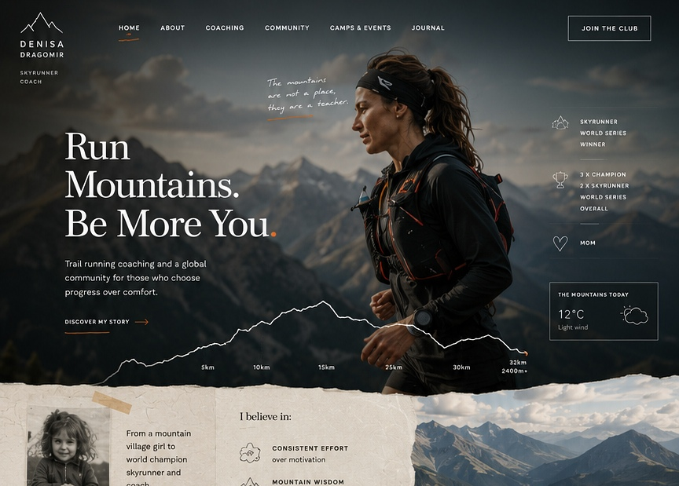
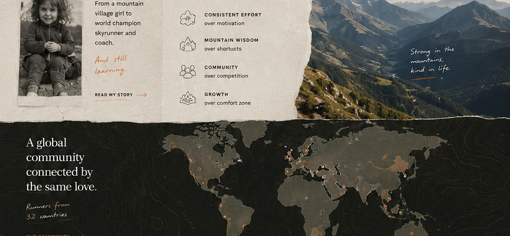
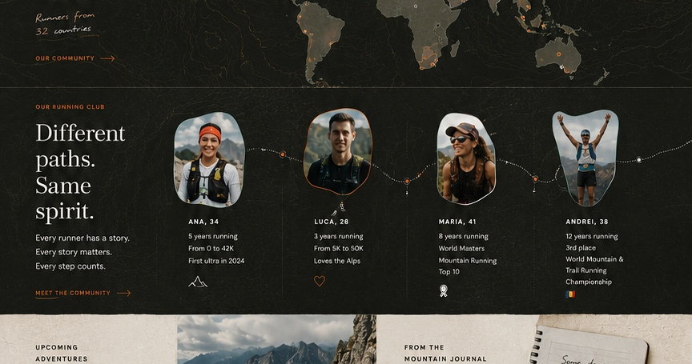
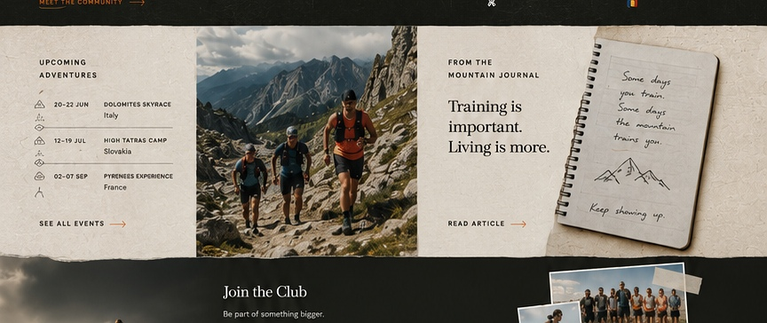

Ana
From first 5K to first ultra. Performance means becoming braver than before.

Elite trail running coaching, motherhood, mountain experience, and a community where progress has many forms.
From mountain roots to world-class skyrunning, Denisa brings race experience, motherhood, discipline, and calm coaching into one place.

Skyrunning performance and mountain-race intelligence.
A realistic view of strength, recovery, time, and consistency.
Beginners and elite athletes are part of the same mountain path.

From first 5K to first ultra. Performance means becoming braver than before.

International ultra podium finisher. Performance also means discipline over years.

Returned to running after becoming a mom. Progress measured in consistency.

First mountain race after injury. Confidence rebuilt step by step.

Training, recovery, fear, motherhood, race lessons, and mountain resilience.